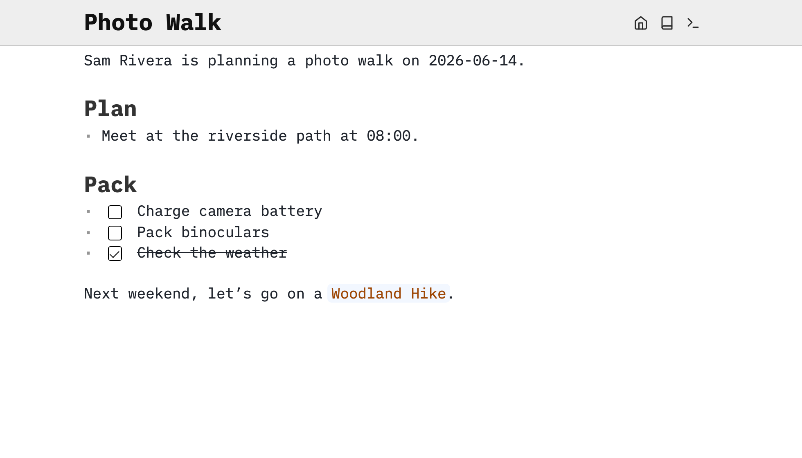

記憶與參考 · MR-01
Trilium Notes · Trilium Demo 原作桌面視窗
MR-01 v1.0.0 · 原圖逐 byte 保留 · 圖片提交於 2026-01-03，App 版本未標明 · 未入選
封存來源：reference12 · aef3f516；原圖未改
Copyright 2017–2025 zadam, Elian Doran, and other contributors。AGPL-3.0-or-later。圖片提交者 Adorian Doran（adoriandoran）。透明留白、陰影及原視窗完整保留；不是整篇可捲動內容，沒有真搜尋、編輯或筆記樹操作。
來源、版本、授權與限制（原封存說明）
此處只陳列未修改的官方文件圖片及授權，沒有引入或運行 Trilium 程式。原圖與文件維持原授權；不暗示背書，不另限制原授權權利，也不替日後真正前端作授權決定。圖片專用許可書並未另行取得。
記憶與參考 · MR-02
SilverBullet · Photo Walk 公開教學筆記原圖
MR-02 v1.0.0 · 固定來源 237ef6a2 · 實際 App 版本／capture build 未知 · 未入選
封存來源：reference12 · aef3f516；原圖未改

SilverBullet / Zef Hemel，Copyright 2022。MIT。1960 × 1120 完整原圖未裁切、重畫、翻譯或重新編碼；圖上控制不可操作。
來源、版本、授權與限制（原封存說明）
官方教學明確提供 Photo Walk 及圖中相同文字，屬已公開的教學示例，不是本次讀取私人帳戶。但 Sam Rivera 是否虛構仍未知，不把公開範例說成已證合成身份。圖像最後路徑提交 a8fe718f（2026-11-03，Zef Hemel）不證明實際拍攝 runtime 或日期。
只呈現這張桌面筆記原圖，不推定圖外頁面、側欄或完整可捲動應用。原始教學的 wiki／相對連結原樣留存，並非離線文件鏡像。MIT 隨附文件依據不等於獨立圖片特許、全面品牌獲權或未來程式／字體重用批准。MR-01 及選擇不變。